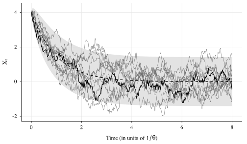
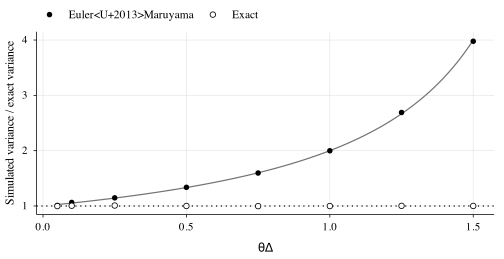
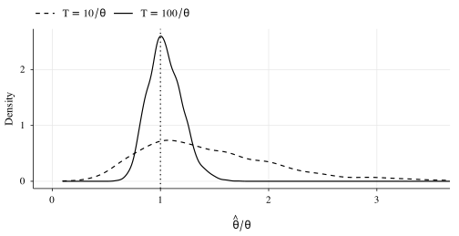

ou_exact <- function(n, dt, theta, mu, sigma, x0) {
a <- exp(-theta * dt)
s <- sigma * sqrt((1 - a^2) / (2 * theta))
x <- numeric(n + 1)
x[1] <- x0
z <- rnorm(n)
for (i in seq_len(n)) x[i + 1] <- mu + (x[i] - mu) * a + s * z[i]
x
}
ou_euler <- function(n, dt, theta, mu, sigma, x0) {
x <- numeric(n + 1)
x[1] <- x0
z <- rnorm(n)
for (i in seq_len(n)) {
x[i + 1] <- x[i] + theta * (mu - x[i]) * dt + sigma * sqrt(dt) * z[i]
}
x
}The Ornstein–Uhlenbeck process: noise with memory
stochastic processes
The simplest mean-reverting stochastic differential equation: its exact solution, how to simulate it without bias, and why its most interesting parameter is also the hardest to estimate.
Keywords
stochastic differential equations, Ornstein–Uhlenbeck, mean reversion, Euler–Maruyama, parameter estimation
Original Article · Vol. I · No. 11 · November 2026
1 One equation, two forces
Almost no physiological variable stays still, and almost none wanders off without bound: it fluctuates around an equilibrium that something pulls it back to. The Ornstein–Uhlenbeck process [1] is the simplest mathematical form of that idea:
\mathrm{d}X_t \;=\; \theta\,(\mu - X_t)\,\mathrm{d}t \;+\; \sigma\,\mathrm{d}W_t . \qquad(1)
The first term is the drift: a restoring force that pushes X_t towards \mu with a strength proportional to the distance. The second is the diffusion: the increments of a Brownian motion W_t, which perturb it relentlessly. The parameter \theta > 0 has units of frequency, and its inverse 1/\theta is the time constant with which the system forgets a perturbation.
2 Exact solution
Unlike most stochastic differential equations, Equation 1 can be solved in closed form [2].
Proposition 1 (Transition distribution) For t \ge 0 and initial condition X_0 = x_0,
X_t \mid X_0 = x_0 \;\sim\; \mathcal{N}\!\left( \mu + (x_0 - \mu)\,e^{-\theta t},\;\; \frac{\sigma^2}{2\theta}\bigl(1 - e^{-2\theta t}\bigr) \right). \qquad(2)
Proof. Let Y_t = e^{\theta t}(X_t - \mu). By Itô’s formula, \mathrm{d}Y_t = \theta e^{\theta t}(X_t - \mu)\,\mathrm{d}t + e^{\theta t}\,\mathrm{d}X_t = \sigma e^{\theta t}\,\mathrm{d}W_t: the drift cancels. Integrating and rearranging,
X_t = \mu + (x_0 - \mu)\,e^{-\theta t} + \sigma\int_0^t e^{-\theta (t - s)}\,\mathrm{d}W_s .
The stochastic integral of a deterministic integrand is Gaussian with mean zero and, by the Itô isometry, its variance is \sigma^2\int_0^t e^{-2\theta(t-s)}\,\mathrm{d}s = \tfrac{\sigma^2}{2\theta}(1 - e^{-2\theta t}).
Two immediate consequences. As t \to \infty the process forgets where it started and reaches the stationary distribution \mathcal{N}\bigl(\mu,\, \sigma^2/2\theta\bigr). And in that regime the autocovariance decays exponentially,
\operatorname{Cov}(X_t, X_{t+h}) \;=\; \frac{\sigma^2}{2\theta}\,e^{-\theta |h|}, \qquad(3)
which is exactly what “noise with memory” means.
3 Simulation
Equation 2 gives an exact simulation scheme for any step \Delta: just sample the Gaussian transition. The generic alternative, valid for any equation, is the Euler–Maruyama scheme [3], which replaces differentials by finite increments.
Fig. 1 shows twelve paths starting far from equilibrium, together with the mean and the \pm 2 standard deviation band predicted by Equation 2.
set.seed(1930)
theta <- 1; mu <- 0; sigma <- 1; x0 <- 4
dt <- 0.02
tt <- seq(0, 8, by = dt)
paths <- do.call(rbind, lapply(1:12, function(k) {
data.frame(t = tt, k = k,
x = ou_exact(length(tt) - 1, dt, theta, mu, sigma, x0))
}))
theory <- data.frame(
t = tt,
m = mu + (x0 - mu) * exp(-theta * tt),
s = sqrt(sigma^2 / (2 * theta) * (1 - exp(-2 * theta * tt)))
)
ggplot() +
geom_ribbon(aes(t, ymin = m - 2 * s, ymax = m + 2 * s), theory,
fill = "grey50", alpha = 0.22) +
geom_line(aes(t, x, group = k), paths, linewidth = 0.25, colour = "grey40") +
geom_line(aes(t, x), subset(paths, k == 1), linewidth = 0.5) +
geom_line(aes(t, m), theory, linetype = "dashed", linewidth = 0.6) +
labs(x = expression("Time (in units of " * 1 / theta * ")"),
y = expression(X[t]))
4 The Euler–Maruyama bias
Does it matter which scheme we use? Euler–Maruyama applied to Equation 1 is an autoregressive process with coefficient 1 - \theta\Delta and innovation variance \sigma^2\Delta, whose stationary variance is
\operatorname{Var}_{\mathrm{EM}} \;=\; \frac{\sigma^2\Delta}{1 - (1 - \theta\Delta)^2} \;=\; \frac{\sigma^2}{2\theta}\cdot\frac{2}{2 - \theta\Delta}. \qquad(4)
The scheme inflates the variance by a factor 2/(2 - \theta\Delta), and becomes unstable when \theta\Delta \ge 2. We check this by simulating long series with both schemes.
steps <- c(0.05, 0.1, 0.25, 0.5, 0.75, 1, 1.25, 1.5)
n <- 2e5
bias <- do.call(rbind, lapply(steps, function(h) {
data.frame(
h = h,
scheme = c("Euler–Maruyama", "Exact"),
ratio = c(var(ou_euler(n, h, 1, 0, 1, 0)),
var(ou_exact(n, h, 1, 0, 1, 0))) / 0.5 # exact: 1 / (2 · 1)
)
}))
ggplot(bias, aes(h, ratio)) +
geom_function(fun = function(h) 2 / (2 - h), colour = "grey45") +
geom_hline(yintercept = 1, linetype = "dotted") +
geom_point(aes(shape = scheme), size = 2.2, fill = "white") +
scale_shape_manual(values = c("Euler–Maruyama" = 16, "Exact" = 21)) +
labs(x = expression(theta * Delta),
y = "Simulated variance / exact variance")
With \theta\Delta = 0.1 the excess is already 5%. The rule of thumb: if the equation is linear, always use the exact transition; if it is not, choose \Delta at least an order of magnitude below the fastest time constant in the system.
5 Estimating the parameters
Observed at regular intervals \Delta, an Ornstein–Uhlenbeck process is exactly an AR(1):
X_{k+1} = a + b\,X_k + e_k, \qquad b = e^{-\theta\Delta},\quad a = \mu\,(1 - b),\quad \operatorname{Var}(e_k) = \frac{\sigma^2}{2\theta}\,(1 - b^2). \qquad(5)
Conditional maximum likelihood therefore reduces to a linear regression of each observation on the previous one, followed by inverting Equation 5.
fit_ou <- function(x, dt) {
x0 <- x[-length(x)]
x1 <- x[-1]
b <- cov(x0, x1) / var(x0)
a <- mean(x1) - b * mean(x0)
s2 <- mean((x1 - a - b * x0)^2)
theta <- -log(b) / dt
c(theta = theta, mu = a / (1 - b), sigma = sqrt(2 * theta * s2 / (1 - b^2)))
}As a toy example, think of an RR interval fluctuating around 850 ms with a time constant of 5 s, recorded once per second for ten minutes.
set.seed(1930)
truth <- c(theta = 0.2, mu = 850, sigma = 20)
x <- ou_exact(600, 1, truth[["theta"]], truth[["mu"]], truth[["sigma"]], 850)
estimate <- fit_ou(x, dt = 1)
tab <- rbind(Truth = truth, Estimate = estimate)
colnames(tab) <- c("$\\theta$ (1/s)", "$\\mu$ (ms)",
"$\\sigma$ (ms/$\\sqrt{\\text{s}}$)")
knitr::kable(tab, digits = 3)| \theta (1/s) | \mu (ms) | \sigma (ms/\sqrt{\text{s}}) | |
|---|---|---|---|
| Truth | 0.200 | 850.00 | 20.000 |
| Estimate | 0.217 | 848.64 | 20.149 |
6 The hard parameter
The previous example had a series of 120 time constants on its side. With short recordings the story changes, because information about \theta does not depend on the number of observations but on how many times the process managed to return to its mean. We check this by repeating the fit over thousands of series of two durations, with the same step \Delta = 0.1/\theta.
set.seed(1930)
estimate_theta <- function(n, dt = 0.1) {
x <- ou_exact(n, dt, 1, 0, 1, rnorm(1, 0, sqrt(0.5)))
fit_ou(x, dt)[["theta"]]
}
mc <- rbind(
data.frame(series = "short", theta = replicate(3000, estimate_theta(100))),
data.frame(series = "long", theta = replicate(3000, estimate_theta(1000)))
)
ggplot(mc, aes(theta, linetype = series)) +
geom_density(linewidth = 0.55, bw = "SJ", key_glyph = "path") +
geom_vline(xintercept = 1, linetype = "dotted") +
scale_linetype_manual(
values = c(short = "dashed", long = "solid"),
breaks = c("short", "long"),
labels = expression(T == 10 / theta, T == 100 / theta)
) +
coord_cartesian(xlim = c(0, 3.5)) +
labs(x = expression(hat(theta) / theta), y = "Density")
With ten time constants, the estimator overestimates \theta by 47% on average and its standard deviation is 0.67: the data barely pin down its order of magnitude. With a hundred, the bias falls to 4% and the spread to 0.16. Sampling faster does not help; recording for longer does.
7 A physiological reading
The stationary variance \sigma^2/2\theta mixes two different things: how much noise comes in (\sigma) and how strongly it is corrected (\theta). A system with \theta = 0.2 and \sigma = 20 has exactly the same standard deviation (31.6) as another with \theta = 2 and \sigma = 63.2, but the second forgets ten times faster. An index of total variability cannot tell them apart; the autocorrelation in Equation 3 can. Separating how much it fluctuates from how fast it is regulated is precisely what a dynamical model adds to a descriptive statistic.
In the next post we use this process as one piece of a larger model: an Ornstein–Uhlenbeck vagal tone whose mean \mu is no longer constant, because the immune system moves it.
Cite as Matías Castillo-Aguilar (2026). The Ornstein–Uhlenbeck process: noise with memory. Drift & Diffusion, 1(11).
References
[1]
G. E. Uhlenbeck and L. S. Ornstein, “On the theory of the Brownian motion,” Physical Review, vol. 36, no. 5, pp. 823–841, 1930, doi: 10.1103/PhysRev.36.823.
[2]
S. Särkkä and A. Solin, Applied stochastic differential equations. Cambridge University Press, 2019. doi: 10.1017/9781108186735.
[3]
P. E. Kloeden and E. Platen, Numerical solution of stochastic differential equations. Berlin: Springer, 1992. doi: 10.1007/978-3-662-12616-5.